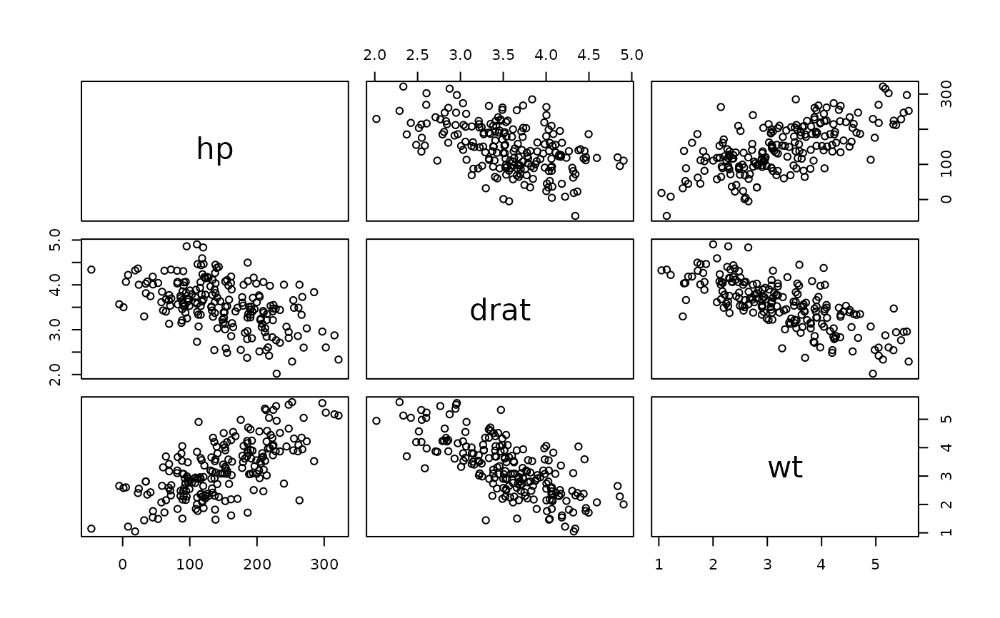
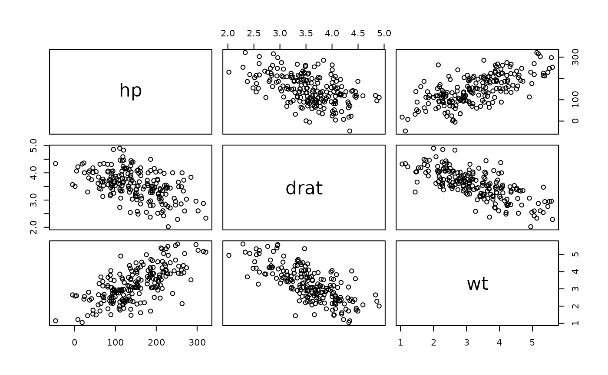

Fast generation of (primitive) synthetic multivariate normal data.
Arguments
- obj
an
sdcMicroObj-class-object or adata.frame- ...
see possible arguments below
n: amount of observations for the generated data, defaults to 200
use: howto compute covariances in case of missing values, see also argument
useincov. The default choice is 'everything', other possible choices are 'all.obs', 'complete.obs', 'na.or.complete' or 'pairwise.complete.obs'.
Details
Uses the cholesky decomposition to generate synthetic data with approx. the same means and covariances. For details see at the reference.
Note
With this method only multivariate normal distributed data with approxiomately the same covariance as the original data can be generated without reflecting the distribution of real complex data, which are, in general, not follows a multivariate normal distribution.
References
Mateo-Sanz, Martinez-Balleste, Domingo-Ferrer. Fast Generation of Accurate Synthetic Microdata. International Workshop on Privacy in Statistical Databases PSD 2004: Privacy in Statistical Databases, pp 298-306.
Examples
data(mtcars)
cov(mtcars[,4:6])
#> hp drat wt
#> hp 4700.86694 -16.4511089 44.1926613
#> drat -16.45111 0.2858814 -0.3727207
#> wt 44.19266 -0.3727207 0.9573790
cov(dataGen(mtcars[,4:6]))
#> hp drat wt
#> hp 4669.41689 -13.8648994 39.9078907
#> drat -13.86490 0.2400441 -0.3140173
#> wt 39.90789 -0.3140173 0.9041203
pairs(mtcars[,4:6])
 pairs(dataGen(mtcars[,4:6]))

## for objects of class sdcMicro:
data(testdata2)
sdc <- createSdcObj(testdata2,
keyVars=c('urbrur','roof','walls','water','electcon','relat','sex'),
numVars=c('expend','income','savings'), w='sampling_weight')
sdc <- dataGen(sdc)
pairs(dataGen(mtcars[,4:6]))

## for objects of class sdcMicro:
data(testdata2)
sdc <- createSdcObj(testdata2,
keyVars=c('urbrur','roof','walls','water','electcon','relat','sex'),
numVars=c('expend','income','savings'), w='sampling_weight')
sdc <- dataGen(sdc)